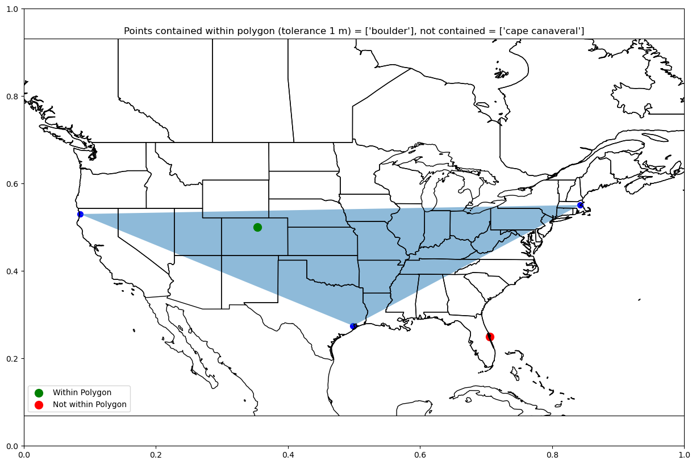
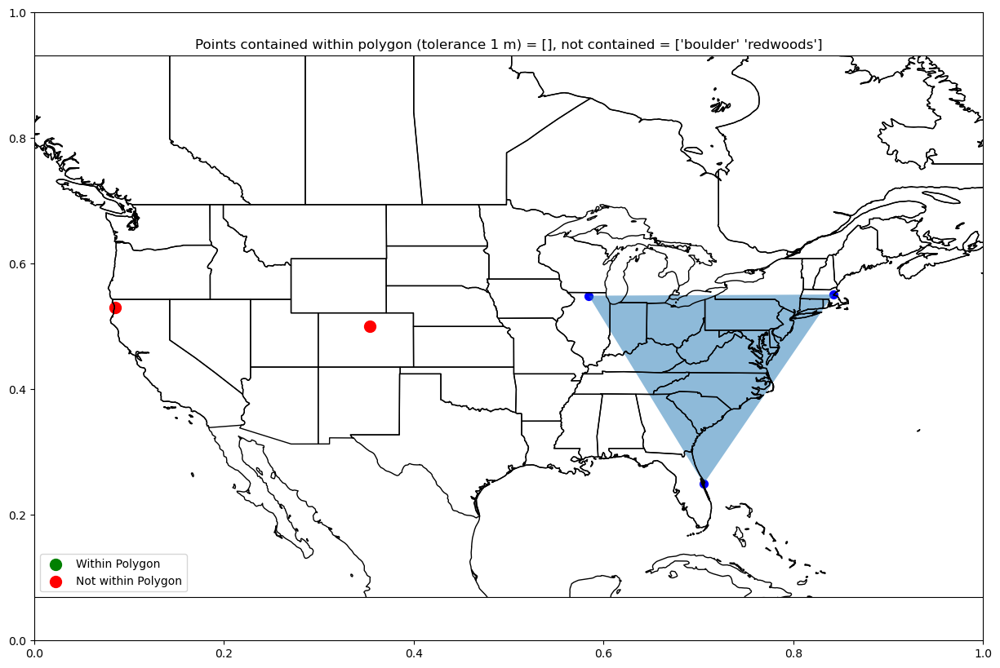
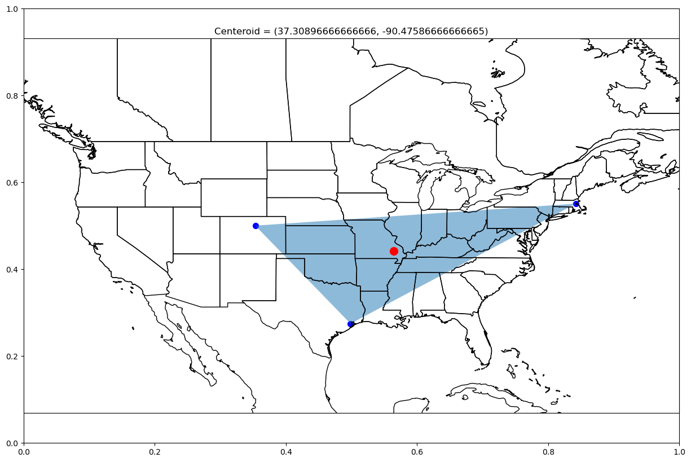
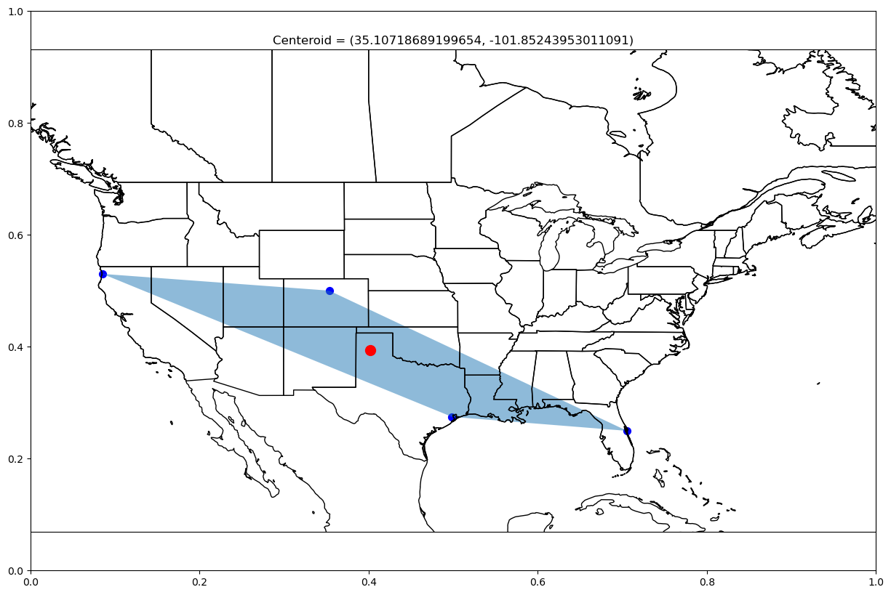

Spherical Polygons and Areas
Overview
Determine the calculations of a spherical polygons based on a unit sphere
Determine clockwise/counterclockwise ordering of points on spherical polygon
Area and Permieter of quadrilateral patch on a unit sphere
Determine if a given point is within a spherical polygon
Center of spherical polygon
Prerequisites
Concepts |
Importance |
Notes |
|---|---|---|
Necessary |
||
Necessary |
||
Helpful |
Will be used for plotting |
|
Helpful |
Will be used for plotting |
Time to learn: 40 minutes
Imports
import pandas as pd # reading in data for location information from text file
import numpy as np # working with arrays, vectors, cross/dot products, and radians
from pyproj import Geod # working with the Earth as an ellipsod (WGS-84)
from shapely.geometry import Point
from shapely.geometry.polygon import Polygon
import matplotlib.pyplot as plt # plotting a graph
from cartopy import crs as ccrs, feature as cfeature # plotting a world map
# Get all Coordinates for Locations
location_df = pd.read_csv("../location_full_coords.txt")
location_df = location_df.rename(columns=lambda x: x.strip()) # strip excess white space from column names and values
location_df.head()
| name | latitude | longitude | cart_x | cart_y | cart_z | rho | theta | phi | polar_x | polar_y | polar_z | |
|---|---|---|---|---|---|---|---|---|---|---|---|---|
| 0 | arecibo | 18.3441 | -66.7527 | 2.389526e+06 | -5.562495e+06 | 2.007347e+06 | 6378137.0 | -1.165054 | 1.250631 | -5.562495e+06 | 2.389526e+06 | 2.007347e+06 |
| 1 | boulder | 40.0150 | -105.2705 | -1.286558e+06 | -4.712394e+06 | 4.101066e+06 | 6378137.0 | 1.304276 | 0.872403 | -4.712394e+06 | -1.286558e+06 | 4.101066e+06 |
| 2 | boston | 42.3601 | -71.0589 | 1.529809e+06 | -4.457769e+06 | 4.297512e+06 | 6378137.0 | -1.240212 | 0.831473 | -4.457769e+06 | 1.529809e+06 | 4.297512e+06 |
| 3 | redwoods | 41.4017 | -124.0417 | -2.678169e+06 | -3.964322e+06 | 4.218080e+06 | 6378137.0 | 0.976657 | 0.848200 | -3.964322e+06 | -2.678169e+06 | 4.218080e+06 |
| 4 | houston | 29.5518 | -95.0982 | -4.930480e+05 | -5.526456e+06 | 3.145762e+06 | 6378137.0 | 1.481816 | 1.055020 | -5.526456e+06 | -4.930480e+05 | 3.145762e+06 |
location_df.index = location_df["name"]
Determine clockwise/counterclockwise ordering of points on spherical polygon
True: when input points are in a clockwise order
False: when input points are in a counterclockwise (or co-linear) order
Shoelace Formula for Signed Polygon Area
TODO
def is_clockwise(pt_lst=None):
# signed polygon area -> shoelace formula
# positive = counterclockwise, negative = clockwise
area = 0
for i in range(0, len(pt_lst)):
if i+1 < len(pt_lst):
area += location_df.loc[[pt_lst[i]]]["latitude"].iloc[0] * location_df.loc[[pt_lst[i+1]]]["longitude"].iloc[0]
area -= location_df.loc[[pt_lst[i+1]]]["latitude"].iloc[0] * location_df.loc[[pt_lst[i]]]["longitude"].iloc[0]
#area /= 2 # determine full sign area, unneeded when just working with signs
if area < 0:
print("clockwise -> negative")
return True
if area > 0:
print("counterclockwise -> positive")
return False
if area == 0:
print("non-collinear -> zero") #https://en.wikipedia.org/wiki/Curve_orientation
return False
is_clockwise(["boulder", "boston", "houston"])
clockwise -> negative
True
def plot_clockwise(pt_lst=None,
lon_west=-180, lon_east=180,
lat_south=-90, lat_north=90):
# Set up world map plot
fig = plt.subplots(figsize=(15, 10))
projection_map = ccrs.PlateCarree()
ax = plt.axes(projection=projection_map)
ax.set_extent([lon_west, lon_east, lat_south, lat_north], crs=projection_map)
ax.coastlines(color="black")
ax.add_feature(cfeature.STATES, edgecolor="black")
# plot arrow between points in order
for i, pt in enumerate(pt_lst):
if i+1 < len(pt_lst):
ax.quiver(location_df.loc[[pt_lst[i]]]["longitude"].iloc[0],
location_df.loc[[pt_lst[i]]]["latitude"].iloc[0],
(location_df.loc[[pt_lst[i+1]]]["longitude"].iloc[0]-location_df.loc[[pt_lst[i]]]["longitude"].iloc[0]),
(location_df.loc[[pt_lst[i+1]]]["latitude"].iloc[0]-location_df.loc[[pt_lst[i]]]["latitude"].iloc[0]),
angles='xy', scale_units='xy', scale=1)
# plot points
longitudes = [location_df.loc[[x]]["longitude"].iloc[0] for x in pt_lst] # longitude
latitudes = [location_df.loc[[x]]["latitude"].iloc[0] for x in pt_lst] # latitude
plt.scatter(longitudes, latitudes, s=100, c="red")
if is_clockwise(pt_lst):
clockwise = "Clockwise"
else:
clockwise = "Counterclockwise"
plt.title(clockwise)
plt.show()
plot_clockwise(["boulder", "boston", "houston"], -130, -60, 20, 60)
clockwise -> negative
plot_clockwise(["houston", "boston", "boulder"], -130, -60, 20, 60)
counterclockwise -> positive
plot_clockwise(["boulder", "boston", "greenwich", "cairo", "timbuktu"])
counterclockwise -> positive
Area and Perimeter of quadrilateral patch
def area_of_polygon_ellps(poly_pts=None):
geod = Geod(ellps="WGS84")
longitudes = [location_df.loc[[pt]]["longitude"].iloc[0] for pt in poly_pts]
latitudes = [location_df.loc[[pt]]["latitude"].iloc[0] for pt in poly_pts]
poly_area_m, poly_perimeter_m = geod.polygon_area_perimeter(longitudes, latitudes)
return abs(poly_area_m) * 1e-6, poly_perimeter_m/1000 # km^2 and km
def area_of_polygon_unit_sphere(poly_pts=None):
geod = Geod(ellps="sphere") # 'sphere': {'a': 6370997.0, 'b': 6370997.0, 'description': 'Normal Sphere (r=6370997)'
longitudes = [location_df.loc[[pt]]["longitude"].iloc[0] for pt in poly_pts]
latitudes = [location_df.loc[[pt]]["latitude"].iloc[0] for pt in poly_pts]
poly_area_m, poly_perimeter_m = geod.polygon_area_perimeter(longitudes, latitudes)
return abs(poly_area_m) * 1e-6, poly_perimeter_m/1000 # km^2 and km
def plot_area(pt_lst=None,
lon_west=-180, lon_east=180,
lat_south=-90, lat_north=90):
# Set up world map plot
fig = plt.subplots(figsize=(15, 10))
projection_map = ccrs.PlateCarree()
ax = plt.axes(projection=projection_map)
ax.set_extent([lon_west, lon_east, lat_south, lat_north], crs=projection_map)
ax.coastlines(color="black")
ax.add_feature(cfeature.STATES, edgecolor="black")
# plot points
longitudes = [location_df.loc[[x]]["longitude"].iloc[0] for x in pt_lst] # longitude
latitudes = [location_df.loc[[x]]["latitude"].iloc[0] for x in pt_lst] # latitude
plt.scatter(longitudes, latitudes, s=100, c="red")
plt.fill(longitudes, latitudes, alpha=0.5)
area_ellps, perimeter_ellps = area_of_polygon_ellps(pt_lst)
area_us, perimeter_us = area_of_polygon_unit_sphere(pt_lst)
print(f"Ellipsoid Area = {area_ellps} km^2")
print(f"Unit Sphere Area = {area_us} km^2")
plt.title(f"Roughly {(area_ellps/509600000)*100:.2f}% ({(area_us/509600000)*100:.2f}%) of the Earth's Surface")
plt.show()
area_ellps, perimeter_ellps = area_of_polygon_ellps(["boulder", "boston",
"arecibo", "houston"])
area_us, perimeter_us = area_of_polygon_unit_sphere(["boulder", "boston",
"arecibo", "houston"])
print(f"Area Ellipsoid = {area_ellps} km^2")
print(f"Area Unit Sphere = {area_us} km^2")
print(f"Perimeter Ellipsoid = {perimeter_ellps} km")
print(f"Perimeter Unit SPhere = {perimeter_us} km")
print(f"Roughly {(area_ellps/509600000)*100:.2f}% of the Earth's Surface")
print(f"Roughly {(area_us/509600000)*100:.2f}% of the Earth's Surface")
Area Ellipsoid = 5342585.6476998255 km^2
Area Unit Sphere = 5344606.94796931 km^2
Perimeter Ellipsoid = 10171.738963248145 km
Perimeter Unit SPhere = 10170.504728302833 km
Roughly 1.05% of the Earth's Surface
Roughly 1.05% of the Earth's Surface
plot_area(["boulder", "boston", "greenwich", "cairo", "arecibo", "houston"])
Ellipsoid Area = 21872449.378265787 km^2
Unit Sphere Area = 21896220.663299154 km^2
plot_area(["redwoods", "rockford", "boston", "houston",], -130, -60, 20, 60)
Ellipsoid Area = 3150946.426714995 km^2
Unit Sphere Area = 3149017.3086414044 km^2
plot_area(["redwoods", "boston", "houston"], -130, -60, 20, 60)
Ellipsoid Area = 3788155.432965353 km^2
Unit Sphere Area = 3782548.632737316 km^2
TODO
Fix invalid overlapping polygon by re-ordering points into a clockwise order
plot_area(["boulder", "boston", "houston", "boston", "cairo", "arecibo", "greenwich"])
Ellipsoid Area = 914381.1786067598 km^2
Unit Sphere Area = 954445.989927043 km^2
Determine if a given point is within a spherical polygon
Single or list of points
def polygon_contains_points(pt_lst=None, polygon_pts=None, tolerance_m=1):
# tolerance in meters
longitudes = [location_df.loc[[x]]["longitude"].iloc[0] for x in polygon_pts]
latitudes = [location_df.loc[[x]]["latitude"].iloc[0] for x in polygon_pts]
lat_lon_coords = tuple(zip(longitudes, latitudes))
polygon = Polygon(lat_lon_coords)
contains = np.vectorize(lambda pt: polygon.contains(Point((location_df.loc[[pt]]["longitude"].iloc[0], location_df.loc[[pt]]["latitude"].iloc[0]))))
contained_by_polygon = contains(np.array(pt_lst))
return contained_by_polygon
def plot_polygon_pts(pt_lst=None, polygon_pts=None, tolerance_m=1,
lon_west=-180, lon_east=180,
lat_south=-90, lat_north=90):
# Set up world map plot
fig = plt.subplots(figsize=(15, 10))
projection_map = ccrs.PlateCarree()
ax = plt.axes(projection=projection_map)
ax.set_extent([lon_west, lon_east, lat_south, lat_north], crs=projection_map)
ax.coastlines(color="black")
ax.add_feature(cfeature.STATES, edgecolor="black")
# plot polygon points
longitudes = [location_df.loc[[x]]["longitude"].iloc[0] for x in polygon_pts] # longitude
latitudes = [location_df.loc[[x]]["latitude"].iloc[0] for x in polygon_pts] # latitude
plt.scatter(longitudes, latitudes, s=50, c="blue")
plt.fill(longitudes, latitudes, alpha=0.5)
# plot check points
pt_lst = np.array(pt_lst)
contains_pts = polygon_contains_points(pt_lst, polygon_pts, tolerance_m)
longitudes = [location_df.loc[[x]]["longitude"].iloc[0] for x in pt_lst[contains_pts]] # longitude
latitudes = [location_df.loc[[x]]["latitude"].iloc[0] for x in pt_lst[contains_pts]] # latitude
plt.scatter(longitudes, latitudes, s=100, c="green", label="Within Polygon")
longitudes = [location_df.loc[[x]]["longitude"].iloc[0] for x in pt_lst[~contains_pts]] # longitude
latitudes = [location_df.loc[[x]]["latitude"].iloc[0] for x in pt_lst[~contains_pts]] # latitude
plt.scatter(longitudes, latitudes, s=100, c="red", label="Not within Polygon")
plt.legend(loc="lower left")
plt.title(f"Points contained within polygon (tolerance {tolerance_m} m) = {pt_lst[contains_pts]}, not contained = {pt_lst[~contains_pts]}")
plt.show()
polygon_contains_points(["boulder"], ["redwoods", "boston", "houston"], 1)
array([ True])
plot_polygon_pts(["boulder"], ["redwoods", "boston", "houston"], 1,
-130, -60, 20, 60)
polygon_contains_points(["cape canaveral"], ["redwoods", "boston", "houston"], 1)
array([False])
plot_polygon_pts(["cape canaveral"], ["redwoods", "boston", "houston"], 1,
-130, -60, 20, 60)
plot_polygon_pts(["boulder", "cape canaveral"], ["redwoods", "boston", "houston"], 1,
-130, -60, 20, 60)

plot_polygon_pts(["boulder", "redwoods"], ["rockford", "boston", "cape canaveral"], 1,
-130, -60, 20, 60)

Center of spherical polygon
def polygon_centroid(polygon_pts=None):
longitudes = [location_df.loc[[x]]["longitude"].iloc[0] for x in polygon_pts]
latitudes = [location_df.loc[[x]]["latitude"].iloc[0] for x in polygon_pts]
lat_lon_coords = tuple(zip(longitudes, latitudes))
polygon = Polygon(lat_lon_coords)
return (polygon.centroid.y, polygon.centroid.x)
polygon_centroid(["boulder", "boston", "houston"])
(37.30896666666666, -90.47586666666665)
def plot_centroid(polygon_pts=None,
lon_west=-180, lon_east=180,
lat_south=-90, lat_north=90):
# Set up world map plot
fig = plt.subplots(figsize=(15, 10))
projection_map = ccrs.PlateCarree()
ax = plt.axes(projection=projection_map)
ax.set_extent([lon_west, lon_east, lat_south, lat_north], crs=projection_map)
ax.coastlines(color="black")
ax.add_feature(cfeature.STATES, edgecolor="black")
# plot polygon points
longitudes = [location_df.loc[[x]]["longitude"].iloc[0] for x in polygon_pts] # longitude
latitudes = [location_df.loc[[x]]["latitude"].iloc[0] for x in polygon_pts] # latitude
plt.scatter(longitudes, latitudes, s=50, c="blue")
plt.fill(longitudes, latitudes, alpha=0.5)
# plot check point
centeroid = polygon_centroid(polygon_pts)
plt.scatter(centeroid[1], centeroid[0], s=100, c="red")
plt.title(f"Centeroid = {centeroid}")
plt.show()
plot_centroid(["boulder", "boston", "houston"],
-130, -60, 20, 60)

plot_centroid(["redwoods", "boulder", "cape canaveral", "houston"],
-130, -60, 20, 60)
